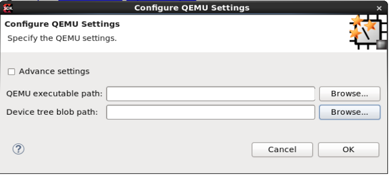

The table below lists all the options available on the Configure QEMU Settings dialog box:
| Option | Description |
|---|---|
| Advanced settings | Select the option to specify the path to the QEMU script (.SH) and the GDB port number. For example: /tmp/qemu-system-aarch64 -nographic -M arm-generic-fdt -dtb /tmp/zcu102-arm.dtb -gdb tcp::1137 -S |
| QEMU executable path |
Path to the QEMU executable. If not specified, the default QEMU executable available at <SDK_install_path>/bin/qemu-system-aarch64 folder is used. |
| Device tree blob path |
Path to the device tree blob (DTB). If not specified, the <SDK_install_path>/data/qemu/zynqMP/zcu102/zynqmp-qemu-arm.dtb file is used. |